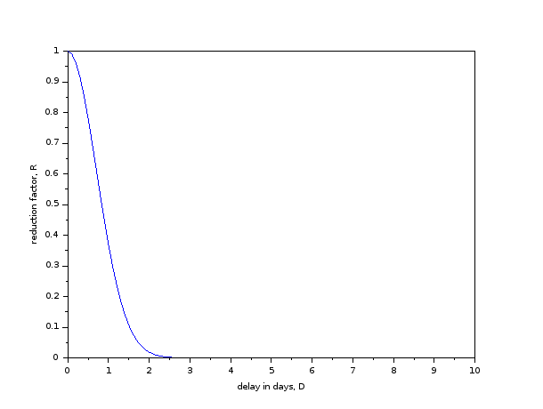

CE 304: Concrete Design - Spring 2023
Table of Contents
- Basic Information
- Course objectives, syllabus, books, pre-requisites
- Course Policies
- Calendar (tentative)
- [T1] Jan 03, Tue
- [L1] Jan 04, Wed
- [L2] Jan 06, Fri
- [T2] Jan 10, Tue
- [L3] Jan 11, Wed
- [L4] Jan 13, Fri
- [T3] Jan 17, Tue
- [L5] Jan 18, Wed
- [L6] Jan 20, Fri
- [T4] Jan 24, Tue
- [L7] Jan 25, Wed
- [L8] Jan 27, Fri
- [T5] Jan 31, Tue [moved to Feb 03, Fri]
- [L9] Feb 01, Wed
- [L10] Feb 03, Fri
- Feb 04 to Feb 08 - Examination I
- [L11] Feb 10, Fri
- [T6] Feb 14, Tue
- [L12] Feb 15, Wed
- Feb 17, Fri – no class
- [T7] Feb 21, Tue
- [L13] Feb 22, Wed
- Feb 24, Fri – no class
- [T8] Feb 28, Tue
- [L16] Mar 01, Wed
- Mar 05 to Mar 12 - Mid Semester Recess
- [T9] Mar 14, Tue
- [L17] Mar 15, Wed
- [L18] Mar 17, Fri
- [T10] Mar 21, Tue
- Mar 22 to Mar 26 - Examination II
- [T11] Mar 28, Tue
- [L19] Mar 29, Wed
- [L20] Mar 31, Fri
- Apr 04, Tue - Holiday (Mahavir Jayanti)
- [L21] Apr 05, Wed
- Apr 07, Fri - Holiday (Good Friday)
- [T12] Apr 11, Tue
- [L22] Apr 12, Wed
- [L23] Apr 14, Fri
- [T13] Apr 18, Tue
- [L24] Apr 19, Wed
- [L25] Apr 21, Fri
- [T14] Apr 25, Tue
- [L26] Apr 26, Wed
- Apr 28 to May 02 - Examination III
Basic Information
| Class timings | Wednesday, Friday, 10:00-11:20 hrs |
|---|---|
| Class location | AB 7/210 |
| Instructor | Gaurav Srivastava (gauravs@iitgn.ac.in) |
| Tutorial timings | Tuesday, 11:30-12:50 hrs |
| Tutorial location | AB 7/205 |
| Tutor | Dravesh Yadav (dravesh.yadav@iitgn.ac.in) |
| TA | Aditi Parashar (parasharaditi@iitgn.ac.in) |
Course objectives, syllabus, books, pre-requisites
Objectives
- To learn the fundamentals of analyzing reinforced concrete structural members.
- To learn design of basic structural members of a reinforced concrete building.
- To learn overall structual design of a reinforced concrete building.
Syllabus
- Properties of concrete and steel.
- Design philosophies.
- Loads and load combinations.
- Analysis and design of beams, columns, slabs, stair case and shallow foundations.
- Ductile detailing.
- (if time permits: ) design of shear walls, seismic design.
Textbook
- Reinforced Concrete Design - S Unnikrishna Pillai and Devdas Menon.
- Respective sections from the book to be read `before' the class, will be mentioned against the lectures.
Reference Books
- Limit State Design of Reinforced Concrete Structures - P C Verghese.
Required codes
- IS 456(2000): Plain and reinforced concrete - Code of Practice (BIS)
- SP 16(1980): Design aids for reinforced concrete to IS 456
Pre-requisites
- Good background in Mechanics of Solids.
- Good background in Structural Analysis.
- Curiosity to learn the fundamentals behind construction of some of the largest structures like Hoover Dam and Burj Khalifa.
Course Policies
Etiquette
- Please be considerate about everyone's time.
- In all emails pertaining to this course, please have "CE304" in the subject line.
- (note that there is no space or hyphen or anything between CE and 304)
Cheating
Cheating cases (assignments/codes/exams/project) will be dealt with in accordance with the Institute norms. It is expected that everyone will uphold the honor code.
Late submissions
All delays beyond the defined deadlines will attract reduction in marks as per the following curve. The reduction factor, \(R\) will be multiplied to the obtained marks. Mathematically, it is given by: \(R = \exp(-D^2)\), where \(D\) is the total delay in days (will be counted hourly, i.e. fractional days are possible).

Grading
Following will be the weightage of different components of assessment
| Component | Weightage |
|---|---|
| Homework assignments | 40% |
| Tutorials | 15% |
| Exams (three) | 15% each |
Modes of formal assessment
- Tutorials will involve two types of problems:
- Set A: to be submitted within the tutorial hour and will be graded towards Tutorial weightage
- Set B: to be practiced outside the tutorial hour and will not be graded
- Assignments will entail analysis/design problems, practical problems, visit reports, etc.
- Exams will involve take home type analysis/design problems along with viva/presentations.
- Expect one assignment and tutorial per week.
Emphasis on self-learning
It is important to develop the habit of self-learning. A number of reading assignments and self-exercises will be given during the course. These will not be formally graded and it will be expected that students will go through them on a regular basis on their own.
Calendar (tentative)
[T1] Jan 03, Tue
- {download} (Review tutorial) Stresses in beams and columns; buckling of columns.
[L1] Jan 04, Wed
- Behavior of composite beams
- Assumptions of beam theory; centroid; neutral axis
- Strain and stress distribution during bending of homegeneous and composite beams
- Shear stresses in beams
- Equivalent section and modular ratio
- Reading from the book: 4.2, 4.3, 6.2
- Problems given in class:
- Finish the derivation of neutral axis location of the composite section
- Calculate neutral axes locations of the two given composite sections (2 material and 3 material)
[L2] Jan 06, Fri
- Behavior of composite columns
- Strains and stresses in columns under axial loads only (homogeneous and composite)
- Effective length; slenderness ratio; buckling of columns
- Strains and stresses in columns under combined axial and bending loads
- Reading from the book: 13.1.2, 13.2.1, 13.2.2
- {Mechanics Practice Problems}
[L3] Jan 11, Wed
- Material behavior of concrete
- Stress-strain behavior; elastic modulus and Poisson's ratio; modulus of rupture
- Effects of confinement and creep
- Grades of concrete
- Reading from the book: 2.8, 2.9, 2.10.3, 2.11.1, 2.11.2
[L4] Jan 13, Fri
- Mix design and characteristic strength.
- Nominal mix vs. design mix
- Characteristic strength
- Material behavior of steel.
- Grades and types of steel
- Manufacturing process of reinforcing steel
- Stress-strain behavior
- Prevention of corrosion
- Reading from the book: 2.7, 2.14
[T3] Jan 17, Tue
- {Assignment 1} - due on Jan 24.
- {T3 Set A}{T3 Set B} Concrete mix design; properties of concrete and steel.
[L5] Jan 18, Wed
- Mix design using IS 10262 and IS 456
- Provisions of the code
- Examples of mix design
- Discussion on materials, workmanship, inspection and testing
- Stress-strain behavior of steel
[L6] Jan 20, Fri
- Design philosophies
- Working stress and ultimate load philosophy
- Limit state method, limit states of strength and serviceability
- Partial factors of safety
- Reading from the book: 3.1.2, 3.2, 3.3, 3.5, 3.6
[T4] Jan 24, Tue
- {Assignment 2} - due on 31 Jan.
- {T4 Set A} Design philosophies; probabilistic design ideas.
[L7] Jan 25, Wed
- Analysis of RC beams.
- design stress-strain curves
- analysis under flexure
- analysis under service loads
- Reading from the book: 4.5, 4.7
[L8] Jan 27, Fri
- Analysis of RC beams.
- design stress-strain curves
- analysis under flexure
- balanced, under-reinforced and over-reinforced sections
- analysis at ultimate limit state; singly- and doubly-reinforced beams
- Reading from the book: 4.5, 4.7
[T5] Jan 31, Tue [moved to Feb 03, Fri]
- {Assignment 3} - due on 10 Feb.
- {T5 Set A}{T5 Set B} Analysis of RC beams.
[L9] Feb 01, Wed
- Analysis and design of RC beams.
- behavior under shear
- basic design process
[L10] Feb 03, Fri
- Design of RC beams
- requirements of cover and spacing of bars
- minimum and maximum reinforcement
- deflection control (serviceability)
- design of singly- and doubly-reinforced beams
- Curtailment and bending of tension reinforcement
- Behavior and design against shear
- Reading from the book: 5.2, 5.3, 5.5, 5.7
- Reading from the book: 5.9, 6.3, 6.4, 6.5, 6.7.6
Feb 04 to Feb 08 - Examination I
Feb 04, 16:30-18:00, Exam 1, 3/205
[L11] Feb 10, Fri
- Examples on design of beams, discussion of exam questions
[T6] Feb 14, Tue
- {Assignment 4} - due on 21 Feb.
- {T6 Set A} Design of beams
[L12] Feb 15, Wed
- Test videos on behavior of RCC beams
- Analysis and design of RC columns
- effective length, braced vs. unbraced columns
- limits on slenderness, minimum eccentricity and reinforcement
- longitudinal and transverse reinforcement
- design of short columns
- Reading from the book: 13.2.3, 13.3, 13.4
Feb 17, Fri – no class
[L13] Feb 22, Wed
- Design of columns
- consideration of combined axial and bending loads
- design of slender columns
- Reading from the book: 13.5, 13.6, 13.7
Feb 24, Fri – no class
- {Assignment 5} - due on 3 Mar.
[T8] Feb 28, Tue
- Design of columns
[L16] Mar 01, Wed
- Design of columns
- design of slender columns
- Reading from the book: 13.5, 13.6, 13.7
Mar 05 to Mar 12 - Mid Semester Recess
[T9] Mar 14, Tue
- Design of columns
[L17] Mar 15, Wed
- Design of RC slabs
- one-way slabs
- Reading from the book: 5.6
- Design of RC slabs
- two-way slabs
- Reading from the book: 11.6, 11.7, 11.8
[L18] Mar 17, Fri
- Design of RC slabs
- two-way slabs
- Reading from the book: 11.1, 11.2 (except 11.2.6)
[T10] Mar 21, Tue
- Design of RC slabs
Mar 22 to Mar 26 - Examination II
[T11] Mar 28, Tue
- Design of RC slabs.
[L19] Mar 29, Wed
- Design of RC slabs
- two-way slabs
- Reading from the book: 11.3, 11.4, 11.5 (up to IS code recommendations)
[L20] Mar 31, Fri
- Types and analysis of shallow foundations.
- Analysis of shallow foundations.
Apr 04, Tue - Holiday (Mahavir Jayanti)
[L21] Apr 05, Wed
- Analysis of shallow foundations.
Apr 07, Fri - Holiday (Good Friday)
[T12] Apr 11, Tue
- Analysis of shallow foundations.
[L22] Apr 12, Wed
- Design of shallow foundations.
[L23] Apr 14, Fri
- Design of shallow foundations.
[T13] Apr 18, Tue
- Design of shallow foundations.
[L24] Apr 19, Wed
- Design of RC buildings.
[L25] Apr 21, Fri
- Design of RC buildings.
[T14] Apr 25, Tue
- Design of RC buildings.
[L26] Apr 26, Wed
- Design of RC buildings.